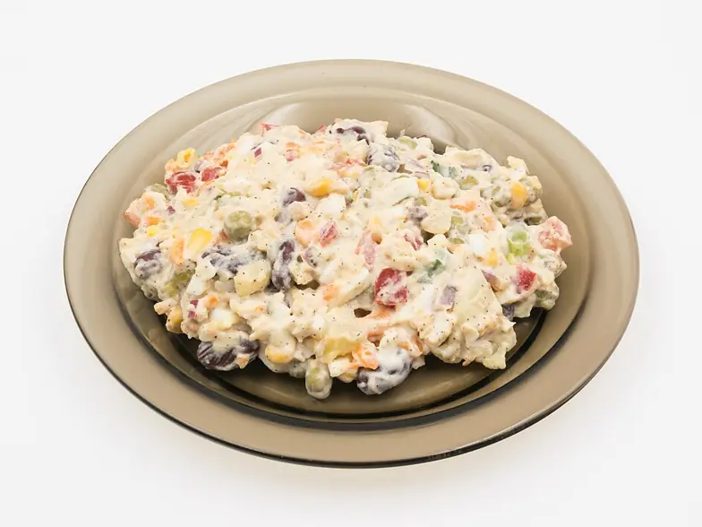

Фото: Jacek Halicki, CC BY-SA 4.0
.jpg){kind=link}
Оливье
Классический новогодний салат с колбасой, картошкой, огурцами и горошком
60 мин6 порц.494 ккал на порциюБ 16 · Ж 38 · У 21Русская кухня
Продукты на 6 порц.
- Картофель4 шт
- Морковь2 шт
- Яйцо куриное4 шт
- Ветчина300 г
- Огурцы солёные3 шт
- Зелёный горошек0,5 шт
- Лук репчатый по желанию0,5 шт
- Майонез200 г
- Сольпо вкусу
- Перец чёрный молотыйпо вкусу
- Укроп по желаниюпо вкусу
- Вода2000 мл
Как готовить
- Вымойте картофель и морковь, сварите в кожуре на среднем огне 20-25 минут, пока нож не будет входить легко. Остудите.
- Сварите яйца вкрутую: 10 минут после закипания, затем переложите в холодную воду.
- Очистите овощи и яйца. Нарежьте их, колбасу и огурцы одинаковым кубиком около 7 мм.
- Мелко нарежьте лук, если используете. Слейте жидкость с горошка.
- Сложите всё в большую миску. Заправьте майонезом прямо перед подачей, посолите и поперчите по вкусу.
- Перемешайте и украсьте укропом.
Совет. Овощи режьте только полностью остывшими, иначе салат быстро скиснет. Без заправки нарезка хранится в холодильнике сутки, заправленный салат лучше съесть за 12 часов. Колбасу можно заменить отварной курицей.